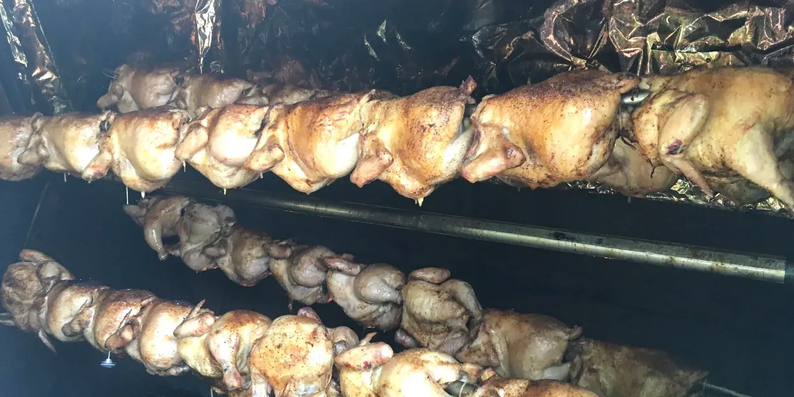

Take Out • Family Meals • Catering
Smoked favorites and homemade sides, packed to go. Wednesday – Sunday, 11 am – 6 pm.
Family size portions, four servings each. Mac & cheese, pulled pork, brisket, beans and slaw.
Weddings, backyard BBQs, corporate events and private parties. Tell us the date and the headcount.


We’re a small kitchen on Roosevelt Trail in Casco. We smoke brisket, pulled pork and chicken, make the sides from scratch, and pack it up to go or bring it to your party. Wednesday through Sunday, 11 to 6. Call ahead and we’ll have it ready.
Take Out MenuPrices include Maine State Sales Tax
All plates served with Mac & Cheese, BBQ Beans, Coleslaw & Cornbread.
4 Servings each

Reach out today for menus